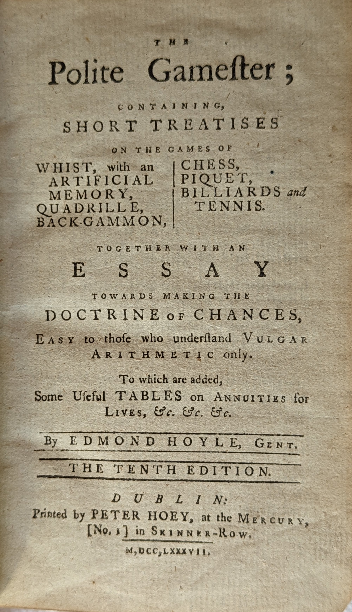

 |
Title: |
THE | Polite Gameſter; | CONTAINING, | SHORT TREATISES | ON THE GAMES
OF | [5 lines to left of rule] WHIST, with an | ARTIFICIAL | MEMORY, |
QUADRILLE, | BACK-GAMMON, | [4 lines to right of rule] | CHESS, | PIQUET |
BILLIARDS and | TENNIS. | TOGETHER WITH AN | ESSAY | TOWARDS MAKING THE | DOCTRINE OF
CHANCES, | Easy to thoſe who underſtand Vulgar | Arithmetic only. | To which are added, | Some Uſeful TABLES on Annuities for | Lives, &c. &c. &c. | [rule] | By EDMOND HOYLE, Gent. | [rule] | [rule] | THE TENTH EDITION. | [rule] | DUBLIN: | Printed by PETER HOEY, at the Mercury, | {No. 1} in Skinner-Row. | [short rule] | M,DCC,LXXXVII. |
| Collation: |
12o: B–Y6 [$½ (−G1,M3,Q1,S3,Y2,3) signed; signing B2 as B, B3 as B2]; 126 leaves, pp. [2 ] [1] 2–58 [59–61] 62–68 [69–71] 72–88 [89–91] 92–123 [124–127] 128–151 [152–155] 156–166 [167–169] 170–184 [185–187] 188–195 [196–201] 202–247 [248–250] |
| Section Title Artifical Memory |
AN | Artificial Memory; | OR, AN | EASY METHOD | OF | Aſſiſting the MEMORY of thoſe that | play at the Game of WHIST. | To which are added, | Several Caſes not hitherto Publiſhed. | [rule] | By EDMOND HOYLE, Gent. | [rule] | DUBLIN: | Printed by PETER HOEY, at the Mercury, | {No. 1} in Skinner-Row. | [short rule] | M,DCC,LXXXVII. |
| Section Title Quadrille |
A SHORT | TREATISE | ON THE GAME OF | QUADRILLE. | SHEWING | The Odds
of winning or loſing moſt Games | that are commonly played; either by calling | a King, or by playing Sans Prendre. | To which are added, | The LAWS of the GAME. | [rule] | By EDMOND
HOYLE, Gent. | [rule] | DUBLIN: | Printed by PETER HOEY, at the | Mercury, (No. 1) in Skinner-Row. | [short rule] | M,DCC,LXXXVII. |
| Section Title Backgammon |
A SHORT | TREATISE | ON THE GAME OF | Back-Gammon. | CONTAINING, | [13 lines to left of rule] A TABLE of the
thirty-| ſix Chances, with Di-|rections how to find out | the Odds of being
hit, | upon ſingle, or double | Dice. | Rules whereby a Beginner | may with
due Attention | to them, attain playing | it well. | The ſeveral Stages for
car-|rying your Men home, | in order to loſe no Point. | [12 lines to right of
rule] How to find out who is for-|wardeſt to win a Hit. | Caſes ſtated for Back-|Games, with Directi-|ons | how to play for one. | Caſes ſtated, how to know
| when you may have the | better of ſaving a Gam-|mon by running. | Variety
of Caſes of Curio-|ſity and Inſtruction. | The Laws of the Game. | [rule]
| By EDMOND HOYLE, Gent. | [rule] | DUBLIN: | Printed by PETER HOEY, at the Mercury, | {No. 1} in Skinner-Row. | [short rule] | M,DCC,LXXXVII. |
| Section Title Piquet |
A | TREATISE | ON THE GAME OF | PIQUET. | [rule] | By EDMOND HOYLE, Gent. | [rule] | [type orns] | DUBLIN: | Printed by PETER HOEY, at the Mercury, | {No. 1} in Skinner-Row. | [short rule] | M,DCC,LXXXVII. |
| Section Title Chess |
SOME | RULES | AND | OBSERVATIONS | FOR PLAYING WELL AT | CHESS. | [rule] | By EDMOND HOYLE, Gent. | [rule] | DUBLIN: | Printed by PETER HOEY, at the Mercury, | {No. 1} in Skinner-Row. | [short rule] | M,DCC,LXXXVII. |
| Section Title Billiards |
A SHORT | TREATISE | ON THE GAME OF | BILLIARDS. | With the Rules and Odds made Uſe of | in Betting at this Game. | Likewiſe an Account of the different Kinds of Games | played on a Billiard Table. | [double rule] | DUBLIN: | Printed by PETER HOEY, at the Mercury, | {No. 1} in Skinner-Row. | [short rule] | M,DCC,LXXXVII. |
| Section Title Tennis |
AN | ACCOUNT | OF THE | GAME | AT | TENNIS: | Whereby a Perſon who
has never ſeen a | Tennis-Court, may learn in what | Manner this Game is played, the uſual | Odds, and
the Method of betting at the | ſame. | [double rule] | DUBLIN: | Printed by PETER HOEY, at the Mercury, | {No. 1} in Skinner-Row. | [short rule] | M,DCC,LXXXVII. |
| Section Title Doctrine of Chances |
AN | ESSAY | TOWARDS MAKING THE | DOCTRINE | OF | CHANCES, | Easy to thoſe who underſtand Vulgar | Arithmetic only. | To which are added, | Some Uſeful TABLES on Annuities for | Lives, &c. &c. &c. | [rule] | By EDMOND HOYLE, Gent. | [rule] | DUBLIN: | Printed by PETER HOEY, at the Mercury, | {No. 1} in Skinner-Row. | [short rule] | M,DCC,LXXXVII. |
| Contents: |
Signature (Page) Reference |
Contents |
Signature (Page) Reference |
Running Titles |
| B1r |
title |
|
|
| B1v |
blank |
|
|
| B2r–F6v (1–58) |
‘A SHORT | TREATISE | ON THE GAME OF | WHIST. |
[...]’ |
B2v–F6r (2–57) |
‘A ſhort Treatise on | the Game of Whist.’ |
|
|
F6v (58) |
‘A ſhort Treatise, &c.’ |
| G1r (59) |
section title Artificial Memory |
|
|
| G1v (60) |
blank |
|
|
| G2r–G5v (61–68) |
‘AN | ARTIFICIAL MEMORY | OR, AN | Eaſy Method of aſſiſting the Memory of thoſe | that play at the Game of Whist. | [...]’ |
G2v–G5r (62–67) |
‘An Artificial | MEMORY.’ |
|
|
G5v (68) |
‘An Artificial, &c.’ |
| G6r (69) |
section title quadrille |
|
|
| G6v (70) |
blank |
|
|
| H1r–I3v (71–88) |
‘A SHORT | TREATISE | ON THE GAME OF | QUADRILLE. |
[...]’ |
H1v–I3r (72–87) |
‘A ſhort Treatise on the | Game of Quadrille.’ |
|
|
I3v (88) |
‘A ſhort Treatise, &c.’ |
| I4r (89) |
section title backgammon |
|
|
| I4v (90) |
blank |
|
|
| I5r–M3r (91–123) |
‘A SHORT | TREATISE | ON THE GAME OF | BACK-GAMMON. | [...]’ |
I5v–M3r (92–123) |
‘A ſhort Treatise on the | Game of Back-Gammon.’ |
| M3v (124) |
blank |
|
|
| M4r (125) |
section title piquet |
|
|
| M4v (126) |
blank |
|
|
| M5r–O5r (127–151) |
‘A | TREATISE | ON THE GAME OF | PIQUET. | [...]’ |
M5v–O5r (128–151) |
‘A Treatiſe on Piquet.’ |
| O5v (152) |
blank |
|
|
| O6r (153) |
section title chess |
|
|
| O6v (154) |
blank |
|
|
| P1r–P6v (155–166) |
‘SOME | RULES | AND | OBSERVATIONS | For playing well at Chess. | [...]’ |
P1v–P6r (156–165) |
‘Rules and Obſervations | for playing at CHESS.’ |
|
|
P6v (166) |
‘Rules and Obſervations &c.’ |
| Q1r (167) |
section title billiards |
|
|
| Q1v (168) |
blank |
|
|
| Q2r–R3v (169–184) |
‘A SHORT | TREATISE | ON THE GAME OF | BILLIARDS. |
[...]’ |
Q2v–R3r (170–183) |
‘A Treatise on the | Game of Billiards.’ |
|
|
R3v (184) |
‘A Treatise, &c.’ |
| R4r (185) |
section title tennis |
|
|
| R4v (186) |
blank |
|
|
| R5r–S3r (187–195) |
‘AN | ACCOUNT | OF THE GAME AT TENNIS. | [...]’ |
R5v–S3r (188–195) |
‘Game of TENNIS.’ |
| S3v (196) |
blank |
|
|
| S4r (197) |
section title doctrine of chances |
|
|
| S4v (198) |
blank |
|
|
| S5r (199) |
‘TO THE | RIGHT HONOURABLE | THE | EARL OF EGMONT. |
[...]’ |
|
|
| S5v (200) |
‘THE | PREFACE. | [...]’ |
|
|
| S6r–Y5r (201–247) |
‘AN | ESSAY | ON THE | DOCTRINE of CHANCES. | [...]’ |
S6v–Y5r (202–247) |
‘An Essay on the | Doctrine of Chances.’ |
| Y5v–Y6v (248–250) |
‘[double rule] | CONTENTS. | [...]’ |
Y6r–Y6v (249–250) |
‘CONTENTS.’ |
| Catchwords: |
L4r(113) [The]; N5r(139) HAP. [CHAP.] |
| Publisher: |
Peter Hoey |
| Printer: |
Peter Hoey |
| Notices: |
1787-08-09 Dublin Evening Post: "New Edition of Hoyle, with the addition of Billiards and Tenis, [sic] never before
printed." |
| Price: |
2s.8½d. The book appears in Hoey's advertisements at the rear of The Golden Cabinet, third
edition, Dublin: Printed by Peter Hoey. 1790. (advertisement) |
| References: |
ESTC T87531, Jessel 816, Rather 64 |
| Copies Seen: |
D [Dublin1787(10)]; D [OKE.221]; Dt [33.u.63]; L [7918.a.78] (ECCO); O [Jessel f.577]; OCl [789.87H F87D]; Levy [1468] |
| Other Copies: |
C [Hib.7.787.51]; NCu-2 [Wallis 605 HOY]; HAG [KW 973 L 18]; CaBVaU [GV1241.H68 1787]; CaOTV [Blake no.1161]; P [795 H852p 1787] |